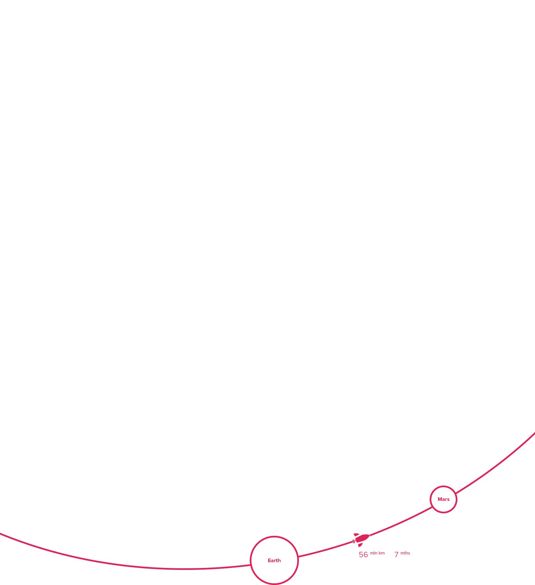

<!DOCTYPE html>
<html lang="ru">
<head>
    <meta charset="UTF-8">
    <meta http-equiv="X-UA-Compatible" content="IE=edge">
    <link rel="shortcut icon" href="./assets/icons/favicon.ico">
    <meta name="viewport" content="width=device-width, initial-scale=1.0">
    <link rel="stylesheet" href="./assets/css/all.min.css">
    <link rel="stylesheet" href="./assets/css/style.css">
    <title>Panteon - Future project</title>
</head>
<body>


<!-- ======================= HEADER ============================ -->


<header class="header" id="#header">
    <nav class="nav__container container">
        <a href="#!" class="nav__logo main__logo"></a>
        <div class="nav__menu">
            <span class="nav__menu__text">Меню</span>
            <span class="nav__menu__icon" id="nav__menu-icon">
                <div class="nav__menu__item1"></div>
                <div class="nav__menu__item2"></div>
                <div class="nav__menu__item3"></div>
            </span>
           <div class="nav__menu__content " id="nav__menu-content">
               <span class="nav__menu_close"><i class="far fa-times " id="close_icon"></i></span>
               
               <ul class="nav__menu__list">
                   <li class="nav__menu__item"><a href="#home" class="nav__menu__link">Home</a></li>
                   <li class="nav__menu__item"><a href="#mars" class="nav__menu__link">Mars</a></li>
                   <li class="nav__menu__item"><a href="#condition" class="nav__menu__link">Condition</a></li>
                   <li class="nav__menu__item"><a href="#living" class="nav__menu__link">Living</a></li>
                   <li class="nav__menu__item"><a href="#offer" class="nav__menu__link">Offer</a></li>
               </ul>
               <span class="dark-mode">
                   <span class="dark-mode_text">Dark mode</span>
                   <span class="dark-mode_icon" id="dark-mode-icon"><i class="fal fa-moon " id="dark-icon"></i></span>
               </span>
           </div>
        </div>
    </nav>
</header>


<!-- ============================== MAIN ============================== -->

<main>

    <section class="home" id="home">
        <button class="home__btn_down"><i class="far fa-chevron-down down-icon"> <span class="down-icon-add"></span></i></button>
        <div class="home__container container">
            <div class="home__content">
                <p class="home__subtitle">Пункт назначения: <span class="home__subtitle_panteon">Пантеон,</span></p>
                <h1 class="home__title">
                    марс
                </h1>

                <div class="home__video">
                    <div class="home__video__text">
                        <span class="home__video__line"></span>
                        <p class="home__video__info">Первый город 
                            на планете Марс 
                            недалеко от горы 
                            Олимп</p>
                    </div>
                    <video id="home-video">
                        <source src="./assets/video/earth1.mp4" type="video/mp4">
                    </video>
                    <div class="home__btn__title">
                        <button class="home__video__btn button" id="home-video-btn"><i class="fas fa-play" id="videoplay"></i></button>
                        <span class="home__video__watch">Смотреть видео</span>
                    </div>
                </div>
            </div>
        </div>
    </section>

    <section class="mars" id="mars">
        <div class="mars__statistics">
        <div class="mars__container container">

            <div class="mars__numbers">
                <div class="mars__numbers__data">
                    <h2 class="mars__numbers__title">4</h2>
                    <p class="mars__numbers__text">
                        четвёртая планета 
                        по удалённости 
                        от Солнца
                    </p>
                </div>
                <div class="mars__numbers__data">
                    <h2 class="mars__numbers__title">7</h2>
                    <p class="mars__numbers__text">
                        седьмая по размерам 
                        планета Солнечной 
                        системы
                    </p>
                </div>
                <div class="mars__numbers__data">
                    <h2 class="mars__numbers__title">10,7%</h2>
                    <p class="mars__numbers__text">
                        массы Земли 
                        (ваш вес будет в 3 раза
                        меньше, чем на Земле) 
                    </p>
                </div>
                <div class="mars__numbers__data">
                    <h2 class="mars__numbers__title">2</h2>
                    <p class="mars__numbers__text">
                        спутника вместо 
                        Луны (как картошка, 
                        только больше)
                    </p>
                </div> 
                <div class="mars__numbers__data">
                    <h2 class="mars__numbers__title">21 км</h2>
                    <p class="mars__numbers__text">
                        высота самой высокой 
                        горы Марса.
                    </p>
                </div>
                <div class="mars__numbers__data">
                    <h2 class="mars__numbers__title">+20</h2>
                    <p class="mars__numbers__text">
                        максимальная 
                        температура 
                        на поверхности 
                    </p>
                </div>
            </div>
            

        </div>
       
        </div>
        <div class="mars__about">
            
              <div class="mars__about__container container">
                  <div class="mars__about__content">
                      <h2 class="mars__about__title">Марс. Вспомнить всё</h2>
                     <div class="mars__about__article">
                        <div class="mars__about__info">
                            <h3 class="mars__about__subtitle">Что такое Марс?</h3>
                            <p class="mars__about__text">
                              Планета Солнечной системы, названа в честь Марса — древнеримского бога войны. Иногда Марс называют «красной планетой» из-за красного оттенка поверхности, придаваемого ей оксидом железа. 
                              Особенности планеты — наличие слабой отмосферы, состоящей в основном из улекислого газа, времена года, пылевые бури, сильная эррозия почв. 
                              
                            </p>
                        </div>
                        <div class="mars__about__info">
                          <h3 class="mars__about__subtitle">Где это? Как туда доехать?</h3>
                          <p class="mars__about__text">
                              Расстояние до Марса — почти 56 миллионов километров. Чтобы преодалеть такое расстояние, нужно лететь 
                              на межпланетоном корабле 7-8 месяцев.
                            </p>
                        </div>
                     </div>
                  </div>
              </div>  
        </div>
        <div class="mars__idea">
            <div class="mars__container container">
                <h2 class="mars__idea__title">
                    От идеи до реализации
                </h2>
                <div class="mars__idea__article">
                    <div class="mars__idea__info">
                        <h3 class="mars__idea__subtitle">Илон Маск. Гений или безумец?</h3>
                        <p class="mars__idea__text1">Канадско-американский инженер, предприниматель, изобретатель и инвестор; миллиардер. Основатель компаний SpaceX и X.com, позже переименованной в PayPal. Планирует потратить большую часть накоплений на реализацию своей мечты, а также мечты многих тысяч романтиков, писателей, учёных: создать внеземную цивилизацию. </p>
                        <p class="mars__idea__script"><span class="script-icon"><i class="fas fa-quote-left"></i></span> Мы должны сделать эту мечту реальностью за наше время жизни. Любой человек, 
                            который пожелает отправиться на Марс, должен иметь такую возможность</p>
                        <p class="mars__idea__text2">— заявил Маск на Международной астронавтической конференции в Гвадалахаре (Мексика). Он обосновал необходимость своего проекта вопросом выживания человечества, которое для своего сохранения должно стать «космическим видом».</p>
                        <p class="mars__idea__text3">
                            Илон поставил перед собой цель: скоратить стоимость вывода кораблей в космос в 10 раз, что станет первым шагом для человечества в освоении Марса.
                        </p>
                    </div>
                    <div class="mars__idea__cover">
                        <div class="mars__idea__img_frame"></div>
                        <div class="mars__idea__img">
                            
                        </div>
                    </div>
                </div>
            </div>
        </div>
    </section>


</main>


  <script src="./assets/script/main.js"></script>  
</body>
</html>